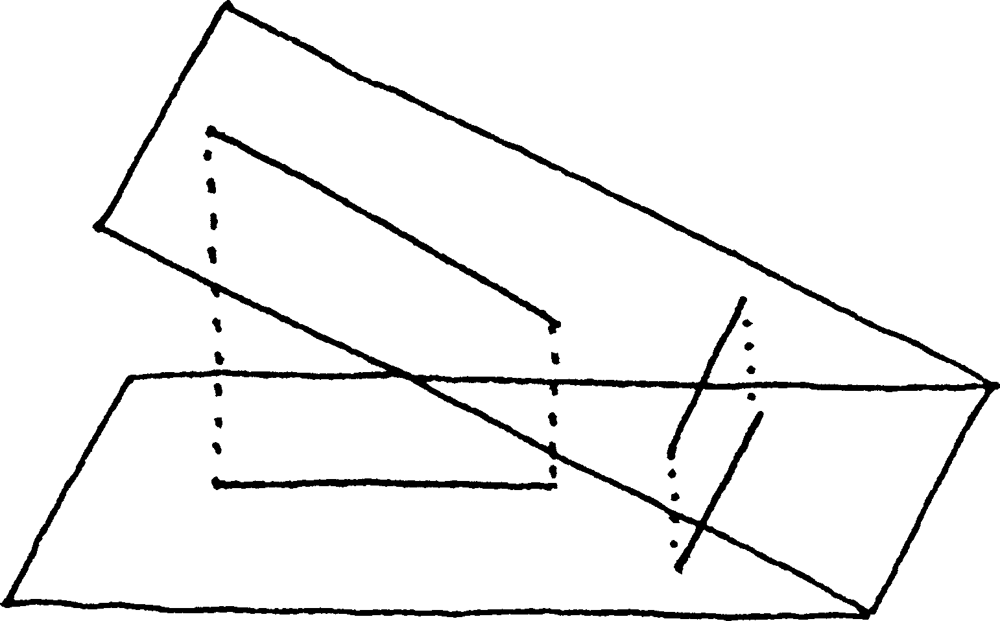
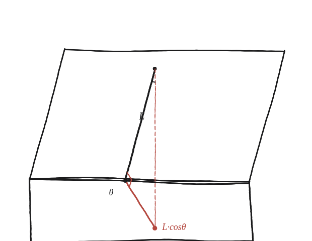

Com depèn exactament el factor d'escala de l'angle entre els plans?

Què hem de produir
Una fórmula per al factor pel qual s'allarga o s'escurça una longitud quan es projecta perpendicularment d'un pla a un altre. Compte, però, amb la paraula "factor": aquí no n'hi ha un de sol, i la primera feina és descobrir de què depèn a part de l'angle entre els plans.
Prova-ho amb un cas fàcil
Si els dos plans coincideixen (angle 0°), cap longitud canvia: factor 1. Si el pla girés fins quedar perpendicular a l'altre (angle 90°), un segment que hi fos perpendicular es projectaria a un sol punt: factor 0. La funció que val 1 a 0° i 0 a 90° és el cosinus.
El cas que desmenteix que hi hagi un sol factor
Amb els dos plans encara a 90°, mirem ara un segment que estigui damunt de la recta on els dos plans es tallen. Aquella recta pertany als dos plans alhora, de manera que el segment no es mou gens en projectar-lo: factor 1, no 0. Dos segments de la mateixa longitud, dins del mateix pla, amb factors ben diferents. El "factor d'escala", doncs, no és un número: depèn de la direcció del segment.
La construcció
Un segment sobre el pla inclinat, perpendicular a la línia on es tallen els dos plans, i la seva projecció (perpendicular) sobre el pla horitzontal.

Tancar-ho
Per al segment del dibuix —el perpendicular a la recta de tall— el segment, la seva projecció i el tros de pla entre tots dos formen un triangle rectangle: la hipotenusa és el segment original i un catet és la projecció. L'angle entre els plans és exactament l'angle d'aquest triangle que toca el segment original, i la raó entre catet i hipotenusa és el seu cosinus. Aquest factor, cos θ, és el més petit de tots.
Les dues direccions, i el número que sí que és únic
Ja es pot descriure què fa la projecció a qualsevol figura: encongeix per un factor cos θ en la direcció perpendicular a la recta de tall, i no toca res en la direcció de la recta de tall. Qualsevol altra direcció queda entremig. És un estirament, amb dos factors diferents segons la direcció —el mateix tipus de transformació que apareix a la Qüestió 112. I hi ha, tot i això, un número que és el mateix per a tothom: l'àrea. Un rectangle amb un costat en cada una de les dues direccions conserva un costat i multiplica l'altre per cos θ, de manera que l'àrea queda multiplicada exactament per cos θ, sigui quina sigui la figura.
No hi ha un sol factor: la projecció perpendicular entre dos plans que formen un angle θ deixa les longituds intactes en la direcció de la recta on els plans es tallen, i les multiplica per cos(θ) en la direcció perpendicular a aquella recta; qualsevol altra direcció queda entremig. És un estirament, amb factors 1 i cos(θ), i per tant no cap homotècia. El que sí que té un factor únic és l'àrea, que queda multiplicada exactament per cos(θ).
Comprovació
Angle entre plans de 60°. Un segment de 8 unitats perpendicular a la recta de tall es projecta a 8×cos60° = 4 unitats. Un segment de 8 unitats situat damunt de la recta de tall es projecta a 8: no canvia. Un de 8 a 45° de la recta de tall es projecta a 6,32, entremig dels dos anteriors. L'àrea, en canvi, queda sempre multiplicada per 0,5.
La comprovació més visual de tot plegat: una moneda circular, vista de gairebé de cantell, es veu com una el·lipse molt aixafada, i la relació entre els dos eixos de l'el·lipse és exactament aquest cosinus. Que es vegi una el·lipse i no un cercle més petit és la prova que el factor no és el mateix en totes les direccions —si ho fos, un cercle donaria sempre un cercle.